caja fragmentos

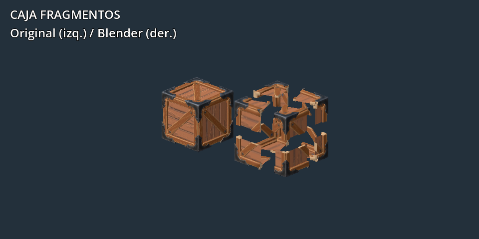
Fragmentos recompuestos en su pose original; UV exteriores conservadas, cortes con material interior.
Integrado: rotura del objeto y restos persistentes.
8 mallas · 7,568 triángulos · Editable .blend · GLB
25/11/2026 · Blender 5.2.2 LTS · 12 variantes derivadas de los modelos del juego.
Integrados los fragmentos de cajas y jarrones y el arbusto con frutos separados. Actualización posterior: el resto de variantes ya tiene conexiones con estados y actores del juego. Las fichas siguientes conservan el estado de entrega de esta tanda de assets.
Abrir lámina completa · Inventario · Tanda anterior por código
Comparativas capturadas en Godot: original a la izquierda y derivado a la derecha. Los fragmentos se muestran separados para ver sus cortes; se exportan recompuestos. Conservan UV exteriores y materiales interiores. Las vasijas abiertas reciben espesor de cerámica. La roca agrietada tiene separación real. El barril abierto original recibe una tapa nueva de cinco tablas y una bisagra animada.
Los originales se conservan. Los editables contienen texturas empaquetadas y están dentro de carpetas con .gdignore para evitar importaciones dobles. Los derivados de caja y barril Cosmos permanecen en arte/lostcave, con las mismas restricciones de distribución del original.
Validación: 109 comprobaciones de assets e integración, sin fallos: 12 GLB importados, 12 editables existentes, geometría sin colisiones, ocho piezas por rotura, bisagra animada, escala recompuesta, fragmentos asentados y misma pose al nacer roto por flag. También pasan las baterías de feedback y recoger/lanzar. La galería se revisó después de corregir las caras interiores y construir una tapa completa.
Reproducción: ejecutar herramientas/exportar_fuentes_blender_interacciones.gd con Godot; después Blender --background --factory-startup --python herramientas/blender_interacciones.py; importar los GLB y ejecutar herramientas/captura_blender_interacciones.gd con Godot. El capturador también verifica geometría, editables, bisagra, escala de roturas, asentamiento, recarga y recolección.

Fragmentos recompuestos en su pose original; UV exteriores conservadas, cortes con material interior.
Integrado: rotura del objeto y restos persistentes.
8 mallas · 7,568 triángulos · Editable .blend · GLB
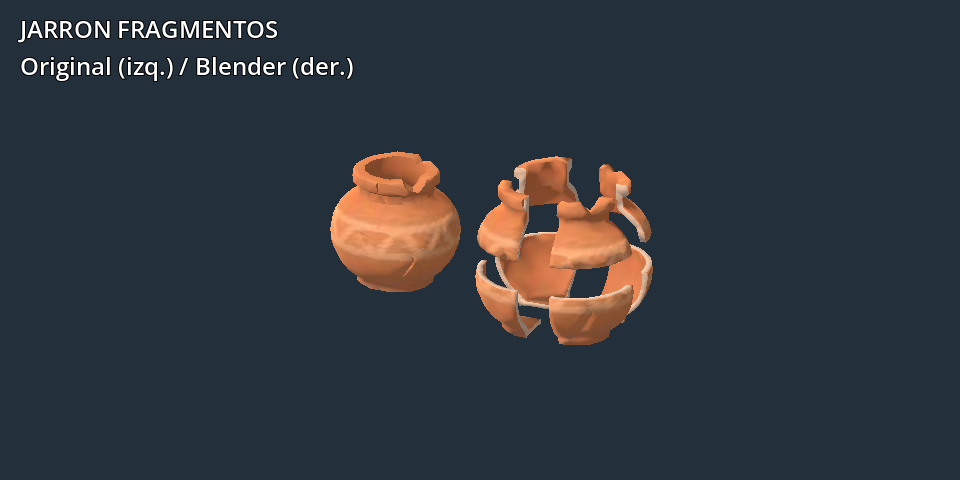
Fragmentos recompuestos en su pose original; UV exteriores conservadas, cortes con material interior.
Integrado: rotura del objeto y restos persistentes.
8 mallas · 2,744 triángulos · Editable .blend · GLB
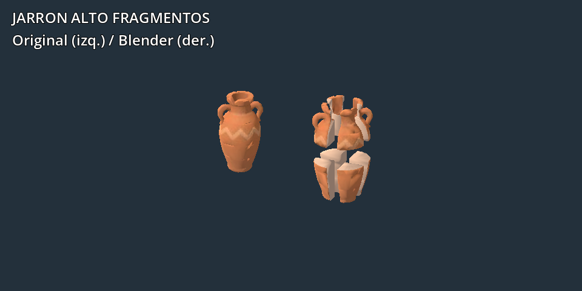
Fragmentos recompuestos en su pose original; UV exteriores conservadas, cortes con material interior.
Integrado: rotura del objeto y restos persistentes.
8 mallas · 2,616 triángulos · Editable .blend · GLB
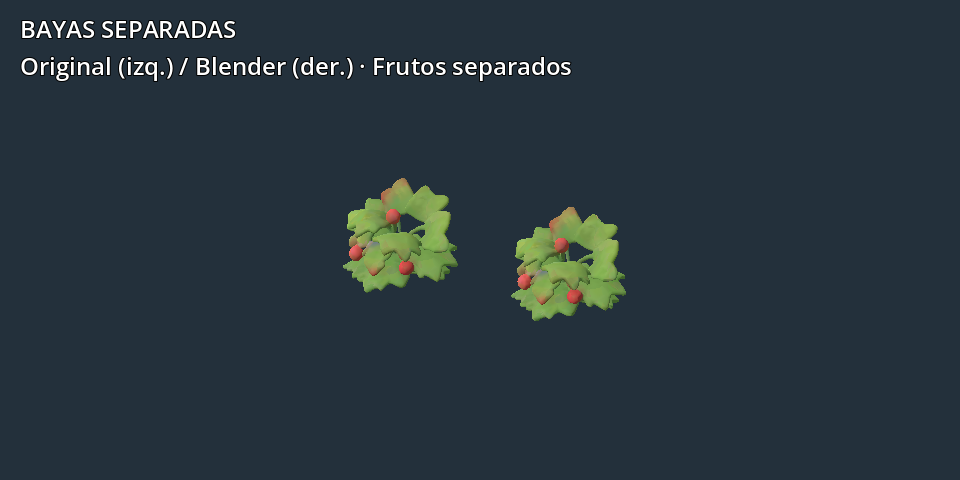
4 regiones de frutos, agrupadas en una malla separada; UV conservadas.
Integrado: arbusto normal; recoger oculta el nodo de frutos y rebrotar lo recupera.
2 mallas · 8,000 triángulos · Editable .blend · GLB
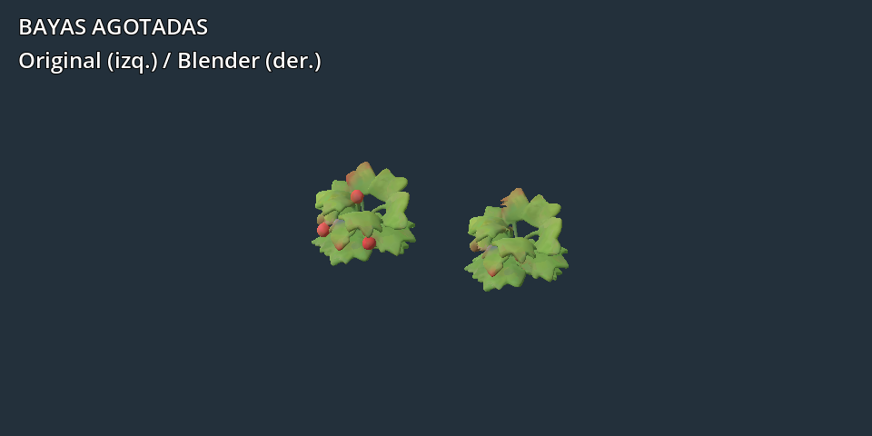
Solo ramas y hojas; frutos retirados geométricamente.
Variante independiente disponible. En partida se ocultan los frutos del modelo separado.
1 mallas · 7,412 triángulos · Editable .blend · GLB
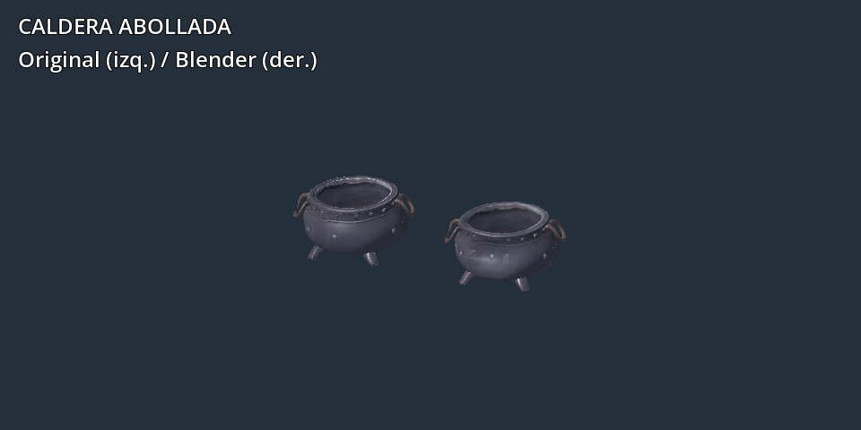
Abolladura frontal real; asas y UV preservadas.
Preparado para asignar tras revisión visual.
1 mallas · 3,208 triángulos · Editable .blend · GLB
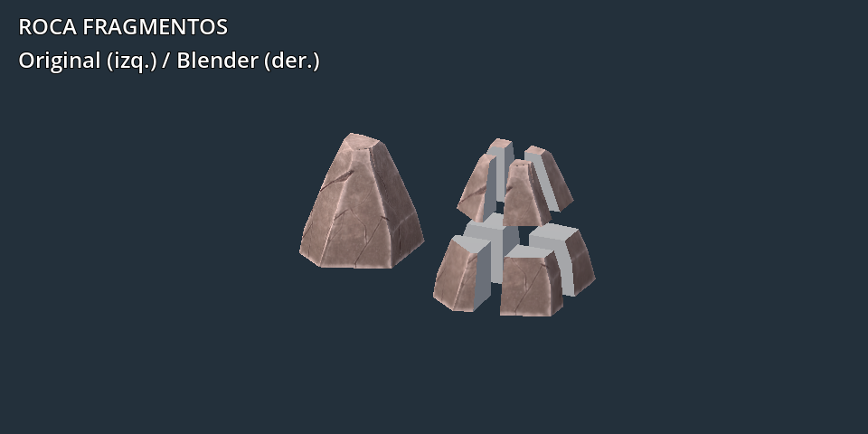
Fragmentos recompuestos en su pose original; UV exteriores conservadas, cortes con material interior.
Preparado para asignar tras revisión visual.
8 mallas · 796 triángulos · Editable .blend · GLB
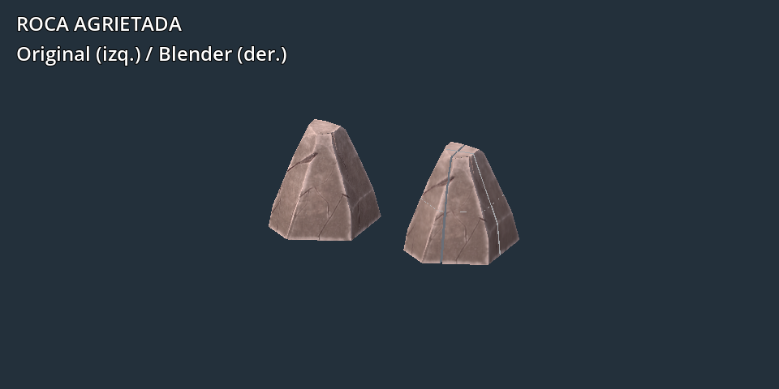
Grietas con separación real y caras interiores; sin shader de grietas.
Preparado para asignar tras revisión visual.
8 mallas · 796 triángulos · Editable .blend · GLB
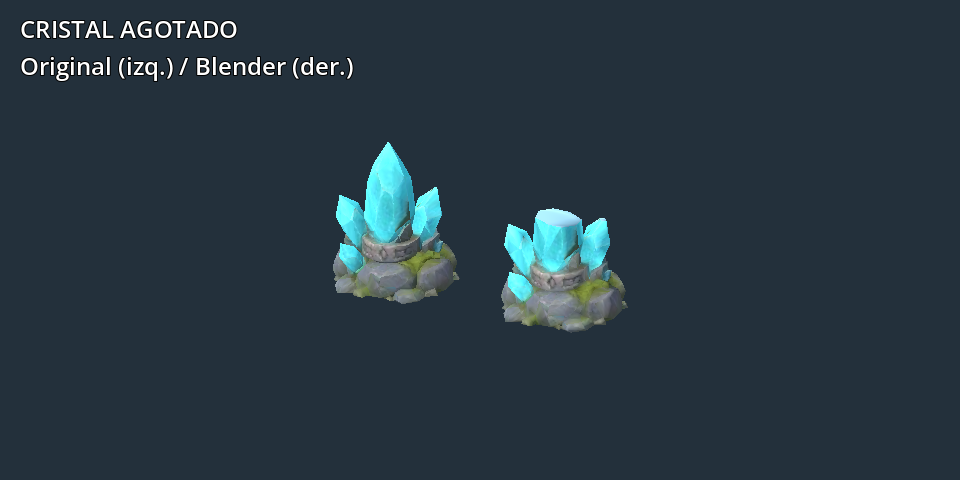
Puntas truncadas; la base permanece.
Preparado para asignar tras revisión visual.
1 mallas · 1,226 triángulos · Editable .blend · GLB
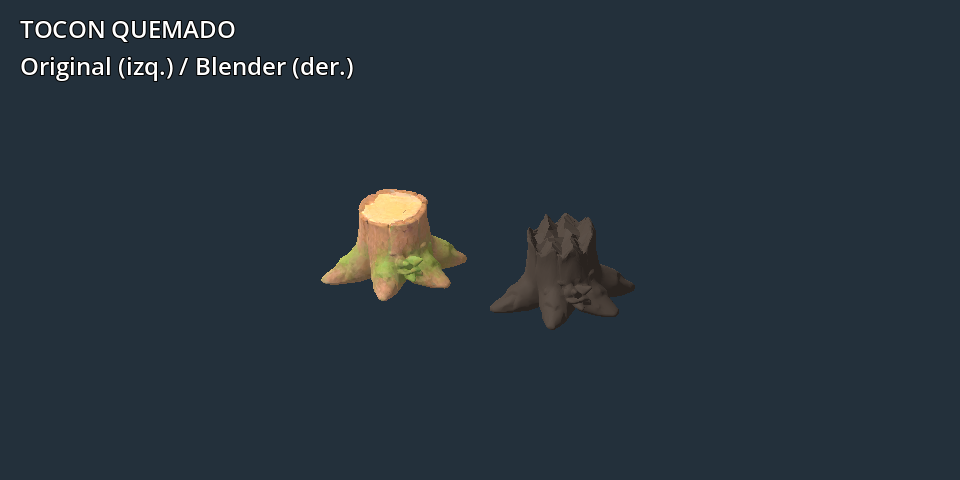
Borde superior erosionado y material carbonizado.
Preparado para asignar tras revisión visual.
1 mallas · 8,000 triángulos · Editable .blend · GLB
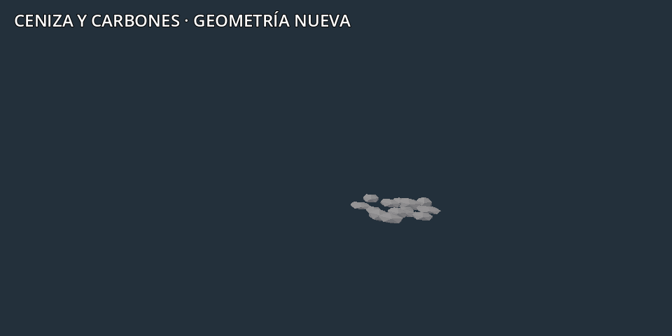
Ceniza y carbones con volumen; sin colisión.
Preparado para asignar tras revisión visual.
14 mallas · 280 triángulos · Editable .blend · GLB
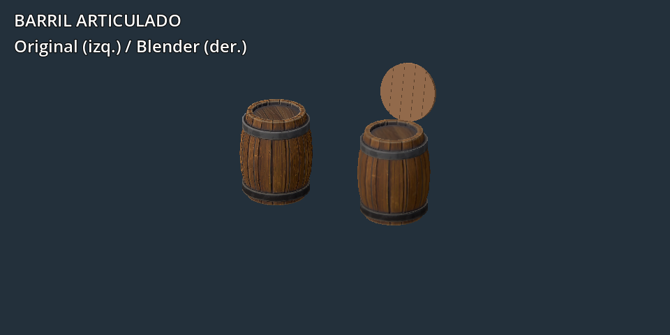
Tapa y cuerpo separados; bisagra en borde trasero y animación abrir_tapa.
Preparado para asignar tras revisión visual.
2 mallas · 980 triángulos · Editable .blend · GLB
La segmentación de bayas parte de regiones rojas de la textura y se hornea en geometría; no usa máscara cromática durante la partida. La unión original entre fruto y hoja puede dejar pequeñas marcas de corte en los puntos de contacto. Revisar estas zonas si se exige un primer plano extremo.